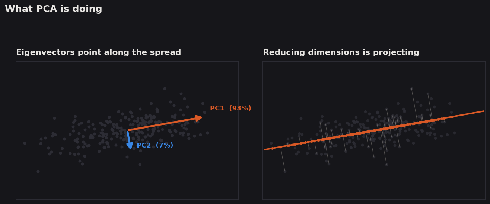
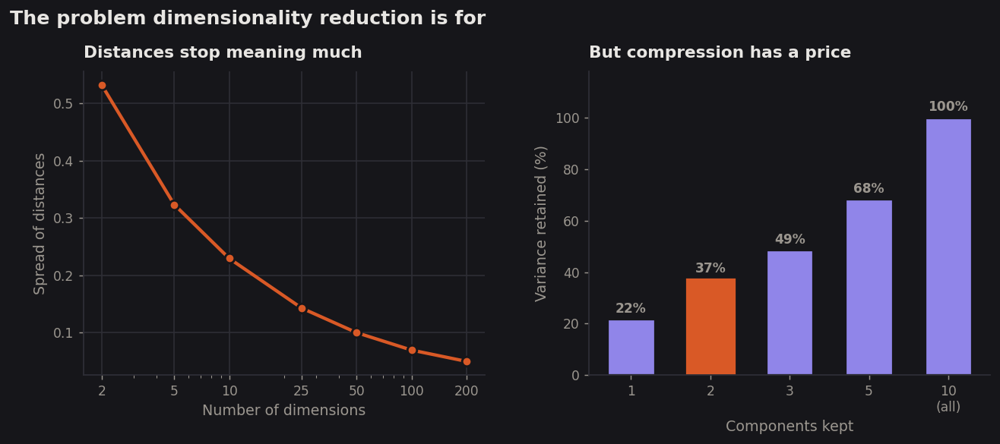
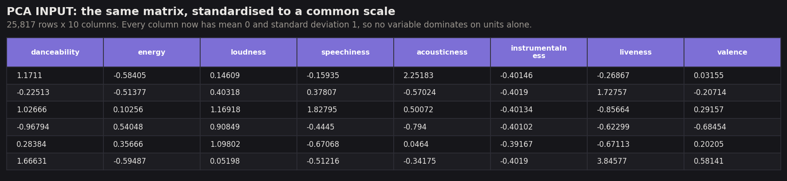
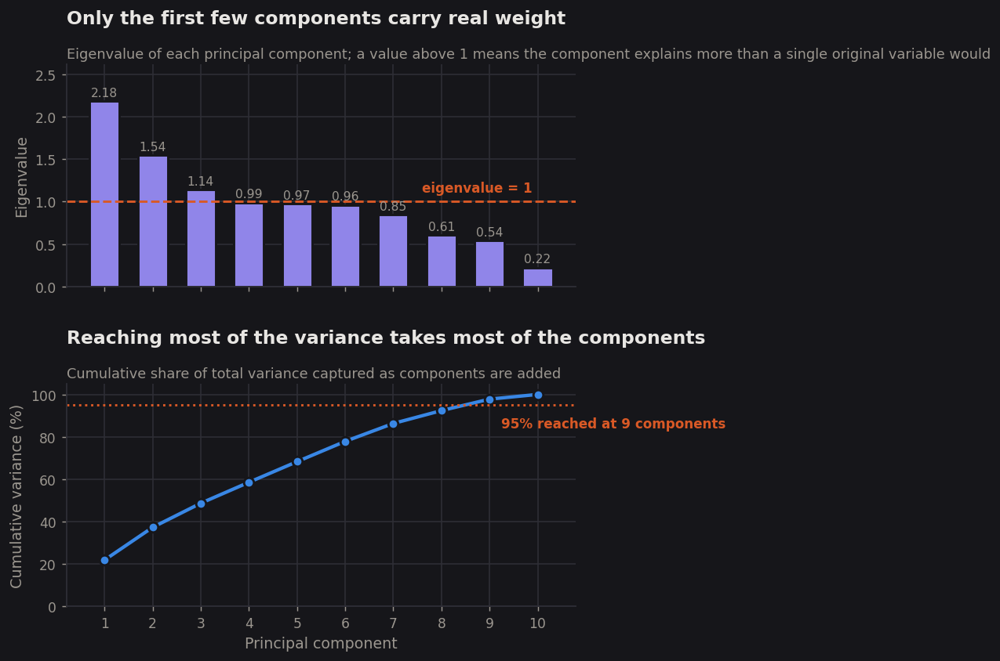
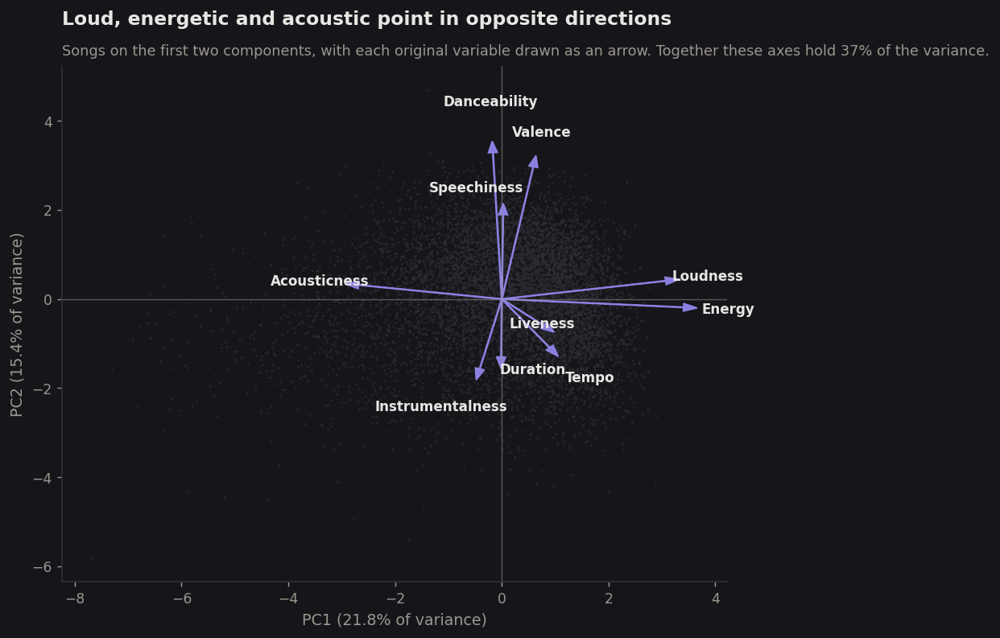
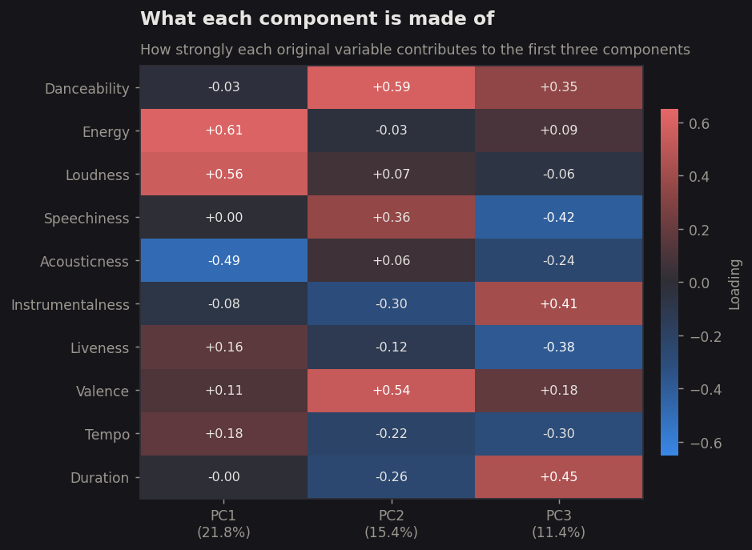
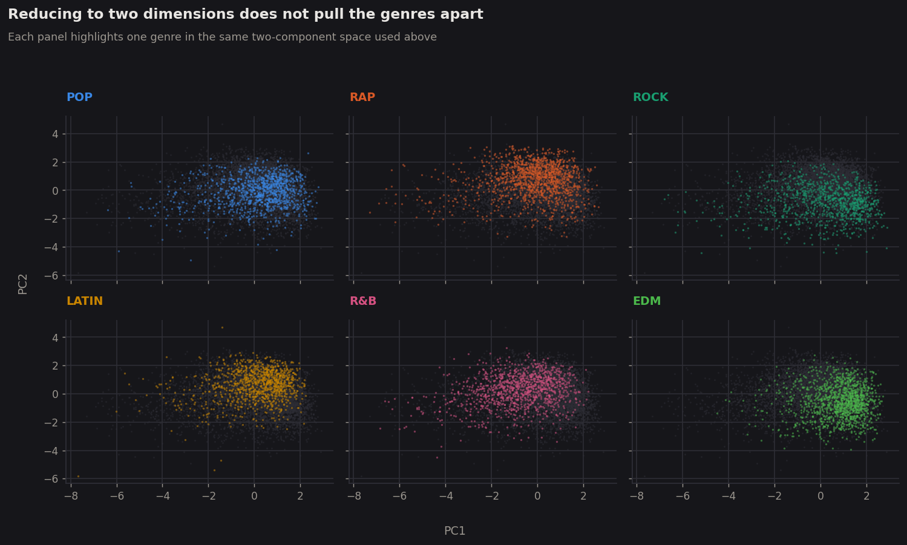

Principal Component Analysis
Ten measurements describe every song in this project, which is more dimensions than anyone can picture at once. PCA asks whether those ten are really ten independent things, or whether a handful of underlying factors would do almost as well — and the answer turns out to matter for everything that follows.
Overview
Principal Component Analysis takes a cloud of points described by many variables and finds a new set of axes for it. The first new axis is placed along the direction in which the data varies most; the second is placed along the direction of greatest remaining variation, at right angles to the first; and so on until the new axes are exhausted. Nothing is thrown away at this stage and no information is lost — the cloud has simply been rotated so that its most important directions line up with the axes. What makes this useful is that the variation is now concentrated. If most of the spread lies along the first two or three new axes, the rest can be dropped, and a ten-dimensional problem becomes a two-dimensional one that fits on a page.
Those new axes are the eigenvectors of the data's covariance matrix, and each comes with an eigenvalue that measures how much variance lies along it. The relationship is worth stating plainly, because it is the whole mechanism: an eigenvector is a direction that the covariance matrix stretches without rotating, and its eigenvalue is the factor by which it stretches. Directions in which the data varies a lot get stretched a lot and earn large eigenvalues; directions in which it barely varies earn small ones. Sorting the eigenvectors by their eigenvalues therefore sorts the possible axes from most to least informative, and the share of total variance each one carries is simply its eigenvalue divided by the sum of all of them. The same decomposition can be reached through the singular value decomposition, which factors the centred data matrix directly rather than going through the covariance matrix; the two routes agree to within rounding error, as confirmed in the results below.

The reason to want this is that high-dimensional data is genuinely difficult, and not only because it is hard to draw. As the number of dimensions grows, points spread out into a space that expands far faster than any realistic sample can fill, so almost every point ends up roughly the same distance from almost every other — the gap between the nearest and the furthest neighbour narrows until "close together" stops carrying much meaning. This directly undermines any method that works by measuring distance, which includes the clustering on the previous tab. Correlated variables make it worse by a different route: when several columns measure overlapping aspects of the same thing, they inflate the apparent dimensionality while adding no real information, and models fitted on them become unstable because the data cannot tell which of the correlated columns deserves the credit. Reducing to a few independent components addresses both problems at once.

Data Prep
PCA needs numeric data with no missing values, and it needs every column on a comparable scale. The scale requirement is not a technicality. PCA works by finding directions of maximum variance, and variance is measured in whatever units a column happens to use, so a variable recorded in large numbers will appear to carry more variation than one recorded in small numbers even when it is less informative. In this data tempo takes values near 120 and loudness near −7, while danceability and valence never leave the range zero to one. Run on the raw columns, PCA would report that the first component is almost entirely tempo, which would be a fact about beats per minute rather than about music.
The same ten numeric audio measurements used for clustering were therefore standardised to mean zero and standard deviation one before the decomposition. Standardising turns the covariance matrix into the correlation matrix, which is the appropriate choice whenever variables are measured in different units. Unlike clustering, PCA does not strictly require unlabelled data — it is a transformation rather than a discovery procedure — but the labels are withheld here anyway, so that the component space can afterwards be checked against genre as a genuine test rather than a circular one.

Loadings
The eigenvectors: how strongly each variable contributes to each component.
pca_components.csv →Projection
Every song's position on the first three components, with genre and popularity rejoined.
pca_projection.csv →Code
Python 3, using scikit-learn for the decomposition and numpy for the
independent SVD cross-check, with pandas and matplotlib for preparation
and figures. Every eigenvalue, loading and variance share quoted below is written out by the script
to a JSON file rather than transcribed by hand.
Results
The decomposition was computed two ways as a check on the arithmetic. Taking the eigenvalues of the correlation matrix directly, and taking them from a singular value decomposition of the centred matrix, gave answers differing by at most 1.8 × 10−15 — machine rounding error, and confirmation that the two routes to PCA really are the same calculation.

That shape is unusual and worth dwelling on. In most datasets with ten correlated columns, two or three components capture the bulk of the variation and the rest is noise. Here the first component holds 21.8%, the second 15.4% and the third 11.4%, for a combined 48.6% — less than half the information in three of ten dimensions. The practical consequence is that PCA cannot usefully compress this data. What it can still do is tell us what the components mean.


The first component is worth comparing against the previous tab. PC1 runs from quiet and acoustic to loud and energetic — precisely the axis along which k-means split the catalogue in two, arrived at by a completely different method with a different distance measure. When an unsupervised grouping and a variance decomposition independently pick out the same direction, that direction is a genuine property of the music rather than an artefact of either technique.

Conclusions
PCA was expected to be a compression step and instead became a finding in its own right. Ten measured qualities of a song turn out to be very nearly ten independent pieces of information: reaching 95% of the variation requires nine of the ten components, and even three components capture under half of it. There is no small set of hidden factors lurking beneath danceability, energy, loudness and the rest. The measurements are not redundant descriptions of two or three underlying musical traits — they genuinely describe ten different things, and a song needs close to all ten numbers to be specified.
That explains something that was puzzling in Module 1. If songs really did vary along two or three dominant axes, then simple correlations between individual measures and popularity ought to have picked up a signal, because each measure would have been a rough proxy for one of the dominant factors. The finding that no measure correlated with popularity above 0.14 now fits with the finding here: the measures are close to independent, so each one carries only its own small slice of what a song is, and no single slice is enough to predict anything.
The components that do emerge are musically coherent, which is reassuring about the data even while being unhelpful for compression. The first is an axis of production intensity running from quiet and acoustic to loud and electric. The second is mood and groove, separating upbeat danceable records from downbeat instrumental ones. The third is closer to format, dividing long instrumental tracks from short, speech-heavy and live ones. These are recognisable ways of describing records, and the first of them is the same axis the clustering found independently — two methods, two distance measures, one answer.
And once again the genres refuse to separate. Rotating into the directions of maximum variance is the most generous possible two-dimensional view of this data, and even there the six genres sit on top of one another. Combined with the clustering result, the conclusion is hard to avoid: the audible qualities captured by these measurements simply do not encode genre. For the project as a whole this sharpens the central question. If what a song sounds like does not determine what it is called, and does not predict whether it is heard, then the supervised methods ahead are being asked to find a signal that the unsupervised ones have now twice failed to see — and the honest expectation should be that they will struggle too.